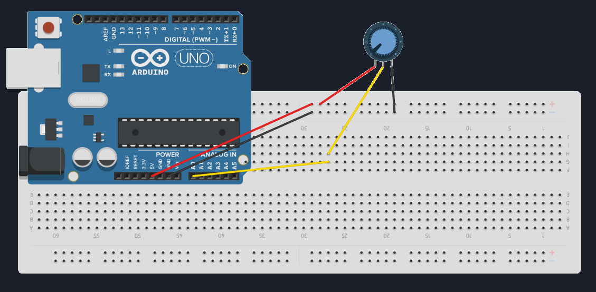

Chapter 9
In the previous chapter, you learned how Arduino reads analog values using analogRead().
You saw numbers between 0 and 1023 scrolling in the Serial Monitor.
But here’s the real question:
What do we do with those numbers?
Because raw numbers by themselves don’t mean much.
This chapter is about turning readings into control.
🔘 What Is a Potentiometer (Really)?
A potentiometer is not just a “knob”.Electrically, it is a variable voltage divider.

It has three pins:
one connected to 5V
one connected to GND
the middle pin outputs a variable voltage
As you turn the knob:
the voltage at the middle pin changes
Arduino reads that voltage using
analogRead()
🔌 Wiring the Potentiometer
Connect it like this:
- One side pin → 5V
- Other side → GND
- Middle pin → A0
That’s it.
No extra components required.
I have an full tutorial on potentiometer, check it out to know more!
💻 Reading the Potentiometer
We have done this in our previous chapter.
void setup() {
Serial.begin(9600);
}
void loop() {
int potValue = analogRead(A0);
Serial.println(potValue);
delay(200);
}
Now turn the knob.
You should see values smoothly changing between:
- 0 (near GND)
- 1023 (near 5V)
🧠 What You Should Notice
The change is continuous
Small turns → small changes
Fast turns → fast changes
🔄 Why Mapping Is Needed
The problem:
analogRead()→ 0 to 1023
But real-world outputs often need:
0 to 255 (PWM)
0 to 180 (servo angle)
specific ranges
So we need a way to convert one range into another.
That’s where map() comes in.
🔢 The map() Function
Arduino provides a helper function:
map(value, fromLow, fromHigh, toLow, toHigh)
Example:
int mappedValue = map(potValue, 0, 1023, 0, 255);
Now turning the potentiometer controls values between 0 and 255!
🧪 Hardware Time: Potentiometer → Serial Output
Same circuit, change the code to this!
void setup() {
Serial.begin(9600);
}
void loop() {
int potValue = analogRead(A0);
int mappedValue = map(potValue, 0, 1023, 0, 255);
Serial.print("Raw: ");
Serial.print(potValue);
Serial.print(" Mapped: ");
Serial.println(mappedValue);
delay(200);
}
This shows you both:
what Arduino reads
what Arduino uses
Now you can see how the original value is efficiently mapped into our specified range.
🎯Let's Recall!!
What happens if a digital input pin is left floating?
Why do we use pull-up resistors?
Which function is used to read analog inputs?
2. To prevent floating inputs
3. analogRead
Check these if you got them wrong:
⚠️ Important Notes About map()
map()does not limit values automaticallyIf inputs exceed range, outputs can too
It works only with integers
🧰 Common Beginner Mistakes
Forgetting to connect GND
Wiring the middle pin incorrectly
Expecting perfect stability (analog is noisy)
Thinking
map()changes voltage (it doesn’t)
map() changes numbers, not signals.
📌 What Comes Next
Now that we can:
read analog values
convert them into useful ranges
The next step is to use them to control something visible.
👉 Next Chapter — Understanding PWM & LED Fading
This is where analog input meets digital output.